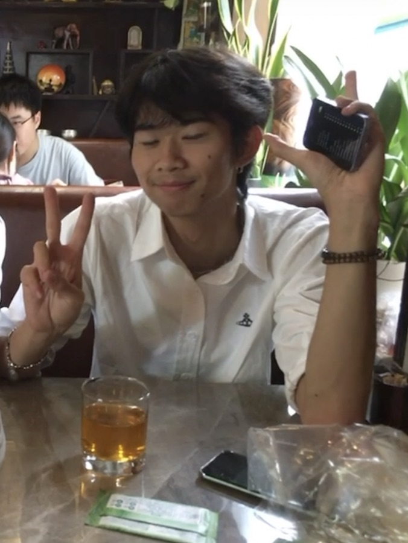

Wenfan Wei
San Jose, CA / email / github / linkedin / resume.pdf
I am a computer engineering student at the University of California, Irvine. I am interested in robotics, simulation, autonomous systems, computer vision, and machine learning.

Education
University of California, Irvine — Bachelor of Science, Computer Engineering; expected July 2028
Activities: Financial Officer, ZOTBotics; UAV Forge Perception Team.
De Anza College — Associate of Science, Computer Engineering; June 2026; GPA: 3.6
Coursework: Data Structures, Computer Architecture and x86 Assembly, Circuits, Differential Equations, Linear Algebra, and Physics.
Activities: President, Mathematical Investment Trading Society; Treasurer, Developers Guild; Project Lead, Foothill Computer Engineering Club.
Experience
AMR Automation Intern, Wellwit Robotics — Los Angeles, CA; August 2026 - present
- Fine-tuning and validating onboard AMR sensors and perception parameters to improve data quality for localization and navigation.
- Working with ROS 2 and SLAM pipelines to build maps, evaluate localization, and troubleshoot navigation behavior while assisting with telemetry collection, issue reproduction, and system-parameter tuning.
Robotics Intern, MAXIEYE — Shanghai, China; May 2026 - August 2026
- Built an NVIDIA Isaac Sim synthetic data pipeline for robotic tube grasping with domain randomization, exporting RGB, depth, segmentation, and bounding-box annotations.
- Generated and validated over 2,000 robot demonstrations totaling 350,000 synchronized frames with RGB camera footage, 7-DOF joint states, and action targets.
- Fine-tuned YOLO11 segmentation and pi0.5 VLA models on simulated and teleoperated data using Colab and physical GPUs, and conducted reinforcement learning in Isaac Lab for sim-to-real deployment.
- Aligned RGB segmentation masks with depth, back-projected pixels into 3D point clouds, estimated tube centers, and generated grasp candidates ranked by IK feasibility and collision clearance.
- Developed a humanoid robot trajectory-cleaning pipeline using spike removal, Savitzky-Golay and One Euro filtering, with forward-kinematics validation to reduce motion noise while preserving end-effector accuracy.
AI Dev, Amazon Web Services / Cal Poly SLO DxHub — San Luis Obispo, CA; June 2025 - August 2025
- Selected for an 80-person internship cohort from more than 1,400 applicants.
- Built a production-ready NumPy and pandas pipeline to clean and normalize more than 5,000 institutional receipt records.
- Developed an AWS-hosted RAG agent and custom interface to automate receipt auditing and flag policy violations; presented results to Amazon engineers and university stakeholders.
Projects
UAV Geospatial Target Fusion
- Built an Isaac Sim synthetic-perception pipeline to generate UAV imagery with randomized camera poses and environmental conditions for YOLO object-detection training.
- Developing a multi-view localization pipeline that projects 2D detections into 3D rays using camera intrinsics and poses, then fuses observations to estimate target locations.
Libreye Eagle
- Built a privacy-focused security camera system using Frigate NVR, Docker, and a fine-tuned YOLO11 object-detection model.
- Designed and 3D-printed a thermally managed enclosure and assembled camera modules with power controls, microSD storage, and battery support.
- Configured FFmpeg, RTSP, and Ethernet streaming on a home server for low-latency video processing and local data ownership.
Technical skills
Programming: Python, C++, C, CUDA, x86 Assembly, Java, SQL
Robotics and simulation: Isaac Sim, Isaac Lab, ROS 2, SLAM
Machine learning and computer vision: PyTorch, TensorFlow, NumPy, pandas
Developer tools: Git, Docker, MATLAB, Linux, AWS